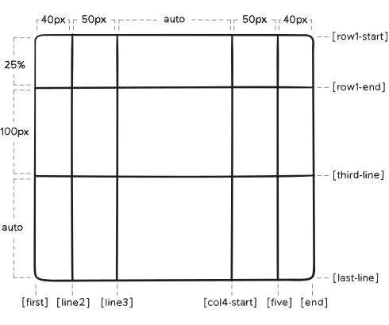

Índice de contenidos
Conceptos básicos
Grid Context
Es la relación entre Grid Container y Grid Item (contenedor y elemento).
// Declaración de GRID
main {
display: grid;
}
Grid Line
El contenedor Grid tiene líneas horizontales (eje X) y verticales (eje Y).
Podemos hacer referencia a una grid line por su número o por su nombre
Grid Track
Es el nombre genérico para cualquier grid-row o grid-column.
Espacio horizontal o vertical entre dos grid-lines consecutivas.
Define la altura de un grid-column o la anchura de un grid-row.
Grid Cell
Es la intersección entre un grid-row y un grid-column.
Está delimitado por cuatro grid-lines.
Grid Area
Es cualquier porción del grid contenida entre 4 grid lines.
Propiedades del contenedor
Display
Declara el contenedor grid.
Valores:
- grid
- inline-grid
// Declaración de GRID
main {
display: grid | inline-grid;
}
grid-template-columns
grid-template-rows
Define las filas y columnas del Grid Container.
Parámetros:
- <track-size>
- <track-name>
main {
grid-template-columns: <track-size> ... | <line-name> <track-size> ...;
grid-template-rows: <track-size> ... | <line-name> <track-size> ...;
}
Ejemplo:

main {
grid-template-columns: 40px 50px auto 50px 40px;
grid-template-rows: 25% 100px auto;
}
También podemmos poner nombres a las líneas. [nombre]

main {
grid-template-columns: [first] 40px [line2] 50px [line3] auto [col4-start] 50px [five] 40px [end];
grid-template-rows: [row1-start] 25% [row1-end] 100px [third-line] auto [last-line];
}
Una línea puede tener más de un nombre:
main {
grid-template-rows: [row1-start] 25% [row1-end row2-start] 25% [row2-end];
}
Si tenemos partes repetidas, podemos usar la notación repeat()
main {
grid-template-columns: repeat(3, 20px [col-start]);
}
Que sería igual que:
main {
grid-template-columns: 20px [col-start] 20px [col-start] 20px [col-start];
}
NO ENTENDIDO!!!
If multiple lines share the same name, they can be referenced by their line name and count.
.item {
grid-column-start: col-start 2;
}
La unidad de medida fr indica 1 fracción del contenedor.
Si la utilizamos junto con otras medidas (px, em, ...), se recalcula y funciona perfectamente.
.container {
grid-template-columns: 1fr 1fr 1fr; /* tres tercios */
}
.container2 {
grid-template-columns: 1fr 100px 1fr; /* 100px entre dos fracciones iguales */
}
grid-template-areas
Define el Grid Template llamando a las grid-area definidas.
Las grid-areas las hemos definido con grid-template-rows y grid-template-columns
Si repetimos el nombre de un area (ej. "cabecera"), la cabecera ocupará tanto espacio como las veces que se repiten (colspan | rowspan)
Un punto . significa que la celda está vacía.
Valores:
- nombre del grid-area: especificado con la propiedad
grid-area(propiedad del item) - . : significa una celda vacía
- none : sin definir grid-area
main {
grid-template-areas: "<grid-area-name> | . | none | ..." "...";
}
Veamos un ejemplo:

.item-a {
grid-area: header;
}
.item-b {
grid-area: main;
}
.item-c {
grid-area: sidebar;
}
.item-d {
grid-area: footer;
}
.container {
grid-template-columns: 50px 50px 50px 50px;
grid-template-rows: auto;
grid-template-areas:
"header header header header"
"main main . sidebar"
"footer footer footer footer";
}
Notice that you're not naming lines with this syntax, just areas.
When you use this syntax the lines on either end of the areas are actually getting named automatically.
If the name of your grid area is foo, the name of the area's starting row line and starting column line will be foo-start, and the name of its last row line and last column line will be foo-end.
This means that some lines might have multiple names, such as the far left line in the above example, which will have three names: header-start, main-start, and footer-start.
grid-template
Es la forma corta para: grid-template-rows, grid-template-columns y grid-template-areas
NO es una propiedad recomendada, en su lugar es mejor usar la propiedad compacta grid como explicaremos más adelante.
Valores:
none: deja las 3 propiedades a su valor inicial.<grid-template-rows>/<grid-template-columns>: Asigna valores agrid-template-columnsy agrid-template-rowsrespectivamente y dejagrid-template-areasa 0.
.container {
grid-template: none | <grid-template-rows> / <grid-template-columns>;
}
También acepta una síntaxis un poco más compleja para definir los tres:
.container {
grid-template:
[row1-start] "header header header" 25px [row1-end]
[row2-start] "footer footer footer" 25px [row2-end]
/ auto 50px auto;
}
Esto equivaldría a:
.container {
grid-template-rows: [row1-start] 25px [row1-end row2-start] 25px [row2-end];
grid-template-columns: auto 50px auto;
grid-template-areas:
"header header header"
"footer footer footer";
}
NOTA IMPORTANTE:
Como la propiedad grid-template no resetea las propiedades implícitas del grid (estas son: grid-auto-columns, grid-auto-rows y grid-auto-flow, y es lo que se suele emplear en la mayoría de los casos, se recomienda usar la propiedad grid en lugar de grid-template.